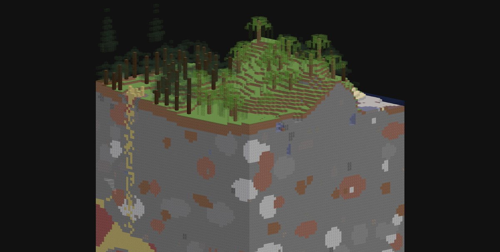

yep, this is just a 10 seconds clip of descent, speed up by 3x
go back to projects page
≡*- ELZZiE PRESENTS... -*≡
██████╗ ██████╗ ███████╗███████╗██████╗
╚════██╗██╔══██╗██╔════╝██╔════╝██╔══██╗
█████╔╝██║ ██║█████╗ █████╗ ██████╔╝
██╔═══╝ ██║ ██║██╔══╝ ██╔══╝ ██╔═══╝
███████╗██████╔╝███████╗███████╗██║
╚══════╝╚═════╝ ╚══════╝╚══════╝╚═╝
██╗ ██╗███╗ ███╗███████╗
██║ ██║████╗ ████║██╔════╝
███████║██╔████╔██║█████╗
╚════██║██║╚██╔╝██║██╔══╝
██║██║ ╚═╝ ██║███████╗
╚═╝╚═╝ ╚═╝╚══════╝
About
i present you... my funny little mod for minecraft 26.3, that extends the world gen from mere y=-64 all the way down to y=-2032, and from y=+320 to y=+2032 as well! huge caverns, clouds in space (as seen in terraria), feel free to explore all that and build deep underground laboratories or big space stations. i'll be honest, i just love such huge deep dark spaces in games, and seeing such in minecraft just feels good yk. this one is a rewrite of my older project of the same name, which originally was for forge 1.20.1 and... less performant, shall we say. and now, it's on fabric 26.3, exactly where it should be!
| check out a slice of this worldgen right in your browser. |
 |
| (might lag a little since there's over 350k triangles in the chunk model) |
(currently there are only 4 structures in this mod, there will be more in the future)
Installing
this mod supports fabric, quilt and neoforge on minecraft 26.3.
(no forge, because forge is a fuck that doesn't want to work with mixins other loaders happily work with, and i'm a lazy fuck that doesn't want to rework my shit)
| 1. download the mod from Github (or from build artifacts in actions tab). |
| 2. if using fabric or quilt, also download fabric api (not needed on neoforge). |
| 3. create a new world, as it can't generate the caverns in already explored chunks. |
| 4. start digging! make some food, it'll take a very long time... |
Links
Alex "Elzzie" Zotov, (c) 2026